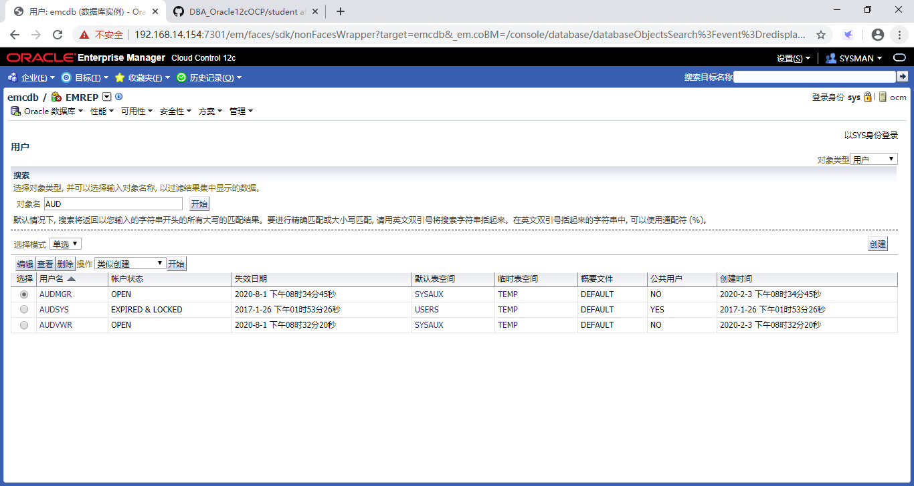

Practices for Lesson 11: Implementing Oracle Database Auditing
2020.01.29 BoobooWei
实践11:概览
Practices for Lesson 11: Overview
In the practices for this lesson, you will:
• Enable unified audit
• Create audit users
• Create an audit policy
• Assign the audit policy to multiple users
• Change an audited table
• Review audit trail data in the UNIFIED_AUDIT_TRAIL view
• Maintain the audit trail
Background: You have just been informed of suspicious activities in the HR.JOBS table in your orcl database. The highest salaries seem to fluctuate in a strange way. You decide to enable auditing and monitor data manipulation language (DML) activities in this table.
在本课的练习中，你将:
- 启用统一审计
- 创建审计用户
- 创建审计策略
- 将审计策略分配给多个用户
- 更改已审核的表
- 在UNIFIED_AUDIT_TRAIL视图中查看审计跟踪数据
- 维护审计记录
背景：你刚刚被告知在HR有可疑的活动。orcl数据库中的JOBS表。最高工资似乎以一种奇怪的方式波动。您决定在此表中启用审计并监视数据操作语言(DML)活动。
实践11-1:启用统一的审计
Practice 11-1: Enabling Unified Auditing
Overview
In this practice, you enable unified auditing.
在这个实践中，您可以启用统一审计。
Task
- Shut down all Oracle processes of all instances.
- Enable the unified auditing feature.
- Restart the processes.
Practice
关闭所有实例的所有Oracle进程。
# 关闭监听
lsnrctl stop
# 关闭OMS服务
export OMS_HOME=/u01/app/oracle/middleware_booboo/oms
$OMS_HOME/bin/emctl stop oms
# 关闭数据库实例
ps -ef|grep pmon
sqlplus / as sysdba << EOF
shutdown immediate
exit
EOF
# 确认实例关闭
ps -ef|grep pmon执行结果
[oracle@ocm ~]$ # 关闭监听
[oracle@ocm ~]$ lsnrctl stop
LSNRCTL for Linux: Version 12.2.0.1.0 - Production on 03-FEB-2020 19:37:54
Copyright (c) 1991, 2016, Oracle. All rights reserved.
Connecting to (DESCRIPTION=(ADDRESS=(PROTOCOL=TCP)(HOST=ocm)(PORT=1521)))
The command completed successfully
[oracle@ocm ~]$ cd /u01/software/
[oracle@ocm software]$ # 关闭OMS服务
[oracle@ocm software]$ export OMS_HOME=/u01/app/oracle/middleware_booboo/oms
[oracle@ocm software]$ $OMS_HOME/bin/emctl stop oms
Oracle Enterprise Manager Cloud Control 12c Release 5
Copyright (c) 1996, 2015 Oracle Corporation. All rights reserved.
Stopping WebTier...
WebTier Successfully Stopped
Stopping Oracle Management Server...
Oracle Management Server Successfully Stopped
Oracle Management Server is Down
[oracle@ocm ~]$ # 关闭数据库实例
[oracle@ocm ~]$ ps -ef|grep pmon
oracle 14193 1 0 09:37 ? 00:00:03 ora_pmon_emcdb
oracle 24204 23888 0 19:33 pts/1 00:00:00 grep --color=auto pmon
[oracle@ocm software]$ sqlplus / as sysdba << EOF
> shutdown immediate
> exit
> EOF
SQL*Plus: Release 12.2.0.1.0 Production on Mon Feb 3 19:41:00 2020
Copyright (c) 1982, 2016, Oracle. All rights reserved.
Connected to:
Oracle Database 12c Enterprise Edition Release 12.2.0.1.0 - 64bit Production
Database closed.
Database dismounted.
ORACLE instance shut down.
SQL> Disconnected from Oracle Database 12c Enterprise Edition Release 12.2.0.1.0 - 64bit Production
[oracle@ocm software]$# # 确认实例关闭
[oracle@ocm software]$# ps -ef|grep pmon
oracle 25626 25583 0 19:43 pts/1 00:00:00 grep --color=auto pmon启用统一审计功能。
# 启用统一审计功能
cd $ORACLE_HOME/rdbms/lib
make -f ins_rdbms.mk uniaud_on ioracle执行结果
[oracle@ocm ~]$ # 启用统一审计功能
[oracle@ocm ~]$ cd $ORACLE_HOME/rdbms/lib
[oracle@ocm lib]$ make -f ins_rdbms.mk uniaud_on ioracle
/usr/bin/ar d /u01/app/oracle/product/12.2.0/db_1/rdbms/lib/libknlopt.a kzanang.o
/usr/bin/ar cr /u01/app/oracle/product/12.2.0/db_1/rdbms/lib/libknlopt.a /u01/app/oracle/product/12.2.0/db_1/rdbms/lib/kzaiang.o
chmod 755 /u01/app/oracle/product/12.2.0/db_1/bin
- Linking Oracle
rm -f /u01/app/oracle/product/12.2.0/db_1/rdbms/lib/oracle
/u01/app/oracle/product/12.2.0/db_1/bin/orald -o /u01/app/oracle/product/12.2.0/db_1/rdbms/lib/oracle -m64 -z noexecstack -Wl,--disable-new-dtags -L/u01/app/oracle/product/12.2.0/db_1/rdbms/lib/ -L/u01/app/oracle/product/12.2.0/db_1/lib/ -L/u01/app/oracle/product/12.2.0/db_1/lib/stubs/ -Wl,-E /u01/app/oracle/product/12.2.0/db_1/rdbms/lib/opimai.o /u01/app/oracle/product/12.2.0/db_1/rdbms/lib/ssoraed.o /u01/app/oracle/product/12.2.0/db_1/rdbms/lib/ttcsoi.o -Wl,--whole-archive -lperfsrv12 -Wl,--no-whole-archive /u01/app/oracle/product/12.2.0/db_1/lib/nautab.o /u01/app/oracle/product/12.2.0/db_1/lib/naeet.o /u01/app/oracle/product/12.2.0/db_1/lib/naect.o /u01/app/oracle/product/12.2.0/db_1/lib/naedhs.o /u01/app/oracle/product/12.2.0/db_1/rdbms/lib/config.o -ldmext -lserver12 -lodm12 -lofs -lcell12 -lnnet12 -lskgxp12 -lsnls12 -lnls12 -lcore12 -lsnls12 -lnls12 -lcore12 -lsnls12 -lnls12 -lxml12 -lcore12 -lunls12 -lsnls12 -lnls12 -lcore12 -lnls12 -lclient12 -lvsn12 -lcommon12 -lgeneric12 -lknlopt `if /usr/bin/ar tv /u01/app/oracle/product/12.2.0/db_1/rdbms/lib/libknlopt.a | grep xsyeolap.o > /dev/null 2>&1 ; then echo "-loraolap12" ; fi` -lskjcx12 -lslax12 -lpls12 -lrt -lplp12 -ldmext -lserver12 -lclient12 -lvsn12 -lcommon12 -lgeneric12 `if [ -f /u01/app/oracle/product/12.2.0/db_1/lib/libavserver12.a ] ; then echo "-lavserver12" ; else echo "-lavstub12"; fi` `if [ -f /u01/app/oracle/product/12.2.0/db_1/lib/libavclient12.a ] ; then echo "-lavclient12" ; fi` -lknlopt -lslax12 -lpls12 -lrt -lplp12 -ljavavm12 -lserver12 -lwwg `cat /u01/app/oracle/product/12.2.0/db_1/lib/ldflags` -lncrypt12 -lnsgr12 -lnzjs12 -ln12 -lnl12 -lngsmshd12 -lnro12 `cat /u01/app/oracle/product/12.2.0/db_1/lib/ldflags` -lncrypt12 -lnsgr12 -lnzjs12 -ln12 -lnl12 -lngsmshd12 -lnnzst12 -lzt12 -lztkg12 -lmm -lsnls12 -lnls12 -lcore12 -lsnls12 -lnls12 -lcore12 -lsnls12 -lnls12 -lxml12 -lcore12 -lunls12 -lsnls12 -lnls12 -lcore12 -lnls12 -lztkg12 `cat /u01/app/oracle/product/12.2.0/db_1/lib/ldflags` -lncrypt12 -lnsgr12 -lnzjs12 -ln12 -lnl12 -lngsmshd12 -lnro12 `cat /u01/app/oracle/product/12.2.0/db_1/lib/ldflags` -lncrypt12 -lnsgr12 -lnzjs12 -ln12 -lnl12 -lngsmshd12 -lnnzst12 -lzt12 -lztkg12 -lsnls12 -lnls12 -lcore12 -lsnls12 -lnls12 -lcore12 -lsnls12 -lnls12 -lxml12 -lcore12 -lunls12 -lsnls12 -lnls12 -lcore12 -lnls12 `if /usr/bin/ar tv /u01/app/oracle/product/12.2.0/db_1/rdbms/lib/libknlopt.a | grep "kxmnsd.o" > /dev/null 2>&1 ; then echo " " ; else echo "-lordsdo12 -lserver12"; fi` -L/u01/app/oracle/product/12.2.0/db_1/ctx/lib/ -lctxc12 -lctx12 -lzx12 -lgx12 -lctx12 -lzx12 -lgx12 -lordimt12 -lclsra12 -ldbcfg12 -lhasgen12 -lskgxn2 -lnnzst12 -lzt12 -lxml12 -lgeneric12 -locr12 -locrb12 -locrutl12 -lhasgen12 -lskgxn2 -lnnzst12 -lzt12 -lxml12 -lgeneric12 -lgeneric12 -lorazip -loraz -llzopro5 -lorabz2 -lipp_z -lipp_bz2 -lippdcemerged -lippsemerged -lippdcmerged -lippsmerged -lippcore -lippcpemerged -lippcpmerged -lsnls12 -lnls12 -lcore12 -lsnls12 -lnls12 -lcore12 -lsnls12 -lnls12 -lxml12 -lcore12 -lunls12 -lsnls12 -lnls12 -lcore12 -lnls12 -lsnls12 -lunls12 -lsnls12 -lnls12 -lcore12 -lsnls12 -lnls12 -lcore12 -lsnls12 -lnls12 -lxml12 -lcore12 -lunls12 -lsnls12 -lnls12 -lcore12 -lnls12 -lasmclnt12 -lcommon12 -lcore12 -laio -lons -lfthread12 `cat /u01/app/oracle/product/12.2.0/db_1/lib/sysliblist` -Wl,-rpath,/u01/app/oracle/product/12.2.0/db_1/lib -lm `cat /u01/app/oracle/product/12.2.0/db_1/lib/sysliblist` -ldl -lm -L/u01/app/oracle/product/12.2.0/db_1/lib `test -x /usr/bin/hugeedit -a -r /usr/lib64/libhugetlbfs.so && test -r /u01/app/oracle/product/12.2.0/db_1/rdbms/lib/shugetlbfs.o && echo -Wl,-zcommon-page-size=2097152 -Wl,-zmax-page-size=2097152 -lhugetlbfs`
test ! -f /u01/app/oracle/product/12.2.0/db_1/bin/oracle || (\
mv -f /u01/app/oracle/product/12.2.0/db_1/bin/oracle /u01/app/oracle/product/12.2.0/db_1/bin/oracleO &&\
chmod 600 /u01/app/oracle/product/12.2.0/db_1/bin/oracleO )
mv /u01/app/oracle/product/12.2.0/db_1/rdbms/lib/oracle /u01/app/oracle/product/12.2.0/db_1/bin/oracle
chmod 6751 /u01/app/oracle/product/12.2.0/db_1/bin/oracle
重新启动进程。
# 启动监听
lsnrctl start
# 启动数据库实例
sqlplus / as sysdba << EOF
startup
exit
EOF
# 启动 OMS < take 10 minutes >
export OMS_HOME=/u01/app/oracle/middleware_booboo/oms
$OMS_HOME/bin/emctl start oms
# 检查统一审计功能是否开启
sqlplus / as sysdba << EOF
select value from v$option where parameter = 'Unified Auditing';
exit
EOF运行结果
[oracle@ocm lib]$ # 启动监听
[oracle@ocm lib]$ lsnrctl start
LSNRCTL for Linux: Version 12.2.0.1.0 - Production on 03-FEB-2020 19:49:11
Copyright (c) 1991, 2016, Oracle. All rights reserved.
Starting /u01/app/oracle/product/12.2.0/db_1/bin/tnslsnr: please wait...
TNSLSNR for Linux: Version 12.2.0.1.0 - Production
System parameter file is /u01/app/oracle/product/12.2.0/db_1/network/admin/listener.ora
Log messages written to /u01/app/oracle/diag/tnslsnr/ocm/listener/alert/log.xml
Listening on: (DESCRIPTION=(ADDRESS=(PROTOCOL=tcp)(HOST=ocm)(PORT=1521)))
Listening on: (DESCRIPTION=(ADDRESS=(PROTOCOL=ipc)(KEY=EXTPROC1521)))
Connecting to (DESCRIPTION=(ADDRESS=(PROTOCOL=TCP)(HOST=ocm)(PORT=1521)))
STATUS of the LISTENER
------------------------
Alias LISTENER
Version TNSLSNR for Linux: Version 12.2.0.1.0 - Production
Start Date 03-FEB-2020 19:49:11
Uptime 0 days 0 hr. 0 min. 5 sec
Trace Level off
Security ON: Local OS Authentication
SNMP OFF
Listener Parameter File /u01/app/oracle/product/12.2.0/db_1/network/admin/listener.ora
Listener Log File /u01/app/oracle/diag/tnslsnr/ocm/listener/alert/log.xml
Listening Endpoints Summary...
(DESCRIPTION=(ADDRESS=(PROTOCOL=tcp)(HOST=ocm)(PORT=1521)))
(DESCRIPTION=(ADDRESS=(PROTOCOL=ipc)(KEY=EXTPROC1521)))
The listener supports no services
The command completed successfully
[oracle@ocm lib]$
[oracle@ocm lib]$ # 启动数据库实例
[oracle@ocm lib]$ sqlplus / as sysdba << EOF
> startup
> exit
> EOF
SQL*Plus: Release 12.2.0.1.0 Production on Mon Feb 3 19:49:54 2020
Copyright (c) 1982, 2016, Oracle. All rights reserved.
Connected to an idle instance.
SQL> ORACLE instance started.
Total System Global Area 838860800 bytes
Fixed Size 8798312 bytes
Variable Size 490737560 bytes
Database Buffers 331350016 bytes
Redo Buffers 7974912 bytes
Database mounted.
Database opened.
SQL> Disconnected from Oracle Database 12c Enterprise Edition Release 12.2.0.1.0 - 64bit Production
[oracle@ocm lib]$ # 启动 OMS
[oracle@ocm lib]$ export OMS_HOME=/u01/app/oracle/middleware_booboo/oms
[oracle@ocm lib]$ $OMS_HOME/bin/emctl start oms
Oracle Enterprise Manager Cloud Control 12c Release 5
Copyright (c) 1996, 2015 Oracle Corporation. All rights reserved.
Starting Oracle Management Server...
Starting WebTier...
WebTier Successfully Started
Oracle Management Server Successfully Started
Oracle Management Server is Up
SQL> exec print_table(q'[select parameter,value from v$option where parameter='Unified Auditing']')
PARAMETER : Unified Auditing
VALUE : TRUE
KnowledgePoint
实践11-2:创建审计用户
Practice 11-2: Creating Audit Users
Overview
In this practice you will create audit users: one account to administer the audit settings and another account to be used by the external auditor. These additional users are optional, but are a good practice that provides a clear separation of duties required in many businesses.
在此实践中，您将创建审计用户:
- 一个帐户用于管理审计设置
另一个帐户用于外部审计人员,这些额外的用户是可选的，但这是一个很好的实践，它提供了许多业务中所需的职责的明确分离。
Assumptions
Unified auditing has been enabled in the orcl database. Preferred SYSDBA credentials have been set.
数据库中已经启用了统一审计,已设置了首选SYSDBA凭据。
Task
- Create a database user to be the administrator of the audit settings and policies. Name this user AUDMGR with the password oracle_4U, and assign the AUDIT_ADMIN role to this user. Use Enterprise Manager Cloud Control to perform this task.
- Create a database user to be used by any person that needs to view the audit data. Name this user AUDVWR with the password oracle_4U and assign the AUDIT_VIEWER role to this user.
Practice
创建一个数据库用户作为审计设置和策略的管理员。命名用户AUDMGR ，密码oracle_4U，并将AUDIT_ADMIN角色分配给这个用户。使用Enterprise Manager云控制执行此任务。
| Step | Window/Page Description | Choices or Values |
| ———— | —————————————- | —————————————————————————————— |
| a. | Cloud Control | Login: User: ADMIN Password: oracle_4U |
| b. | Enterprise Summary | Navigate to the emrep database home page. |
| c. | orcl database home | Click Security > Users. |
| d. | Database Login | Select Credential: Preferred Preferred Credential Name SYSDBA Database Credentials Click Login. |
| e. | Users | Click Create. |
| f. | Create User :General tab | Enter Name: AUDMGR Password: oracle_4U Default Tablespace: SYSAUX Temporary Tablespace: TEMP Click the Roles tab. |
| g. | Create User :Roles tab | Click Edit List. |
| h. | Modify Roles | Select AUDIT_ADMIN. Move to Selected Roles. Click OK. |
| i. | Create User :Roles tab | Click Show SQL. Click Return. |
| j. | Create User :Roles tab | Click OK. |
| k. | Users | An update message is displayed. |创建一个数据库用户，供需要查看审计数据的任何人使用。将此用户命名为AUDVWR，使用密码oracle_4U，并将AUDIT_VIEWER角色分配给该用户。
| Step | Window/Page Description | Choices or Values |
| ———— | —————————————- | —————————————————————————————— |
| a. | Cloud Control | Login: User: AUDVWR Password: oracle_4U |
| b. | Enterprise Summary | Navigate to the emrep database home page. |
| c. | orcl database home | Click Security > Users. |
| d. | Database Login | Select Credential: Preferred Preferred Credential Name SYSDBA Database Credentials Click Login. |
| e. | Users | Click Create. |
| f. | Create User :General tab | Enter Name: AUDVWR Password: oracle_4U Default Tablespace: SYSAUX Temporary Tablespace: TEMP Click the Roles tab. |
| g. | Create User :Roles tab | Click Edit List. |
| h. | Modify Roles | Select AUDIT_VIEWER. Move to Selected Roles. Click OK. |
| i. | Create User :Roles tab | Click Show SQL. Click Return. |
| j. | Create User :Roles tab | Click OK. |
| k. | Users | An update message is displayed. |
CREATE USER "AUDMGR" PROFILE "DEFAULT" IDENTIFIED BY "oracle_4U" DEFAULT TABLESPACE "SYSAUX" TEMPORARY TABLESPACE "TEMP" ACCOUNT UNLOCK
GRANT "AUDIT_ADMIN" TO "AUDMGR"
GRANT "CONNECT" TO "AUDMGR";
CREATE USER "AUDVWR" PROFILE "DEFAULT" IDENTIFIED BY "oracle_4U" DEFAULT TABLESPACE "SYSAUX" TEMPORARY TABLESPACE "TEMP" ACCOUNT UNLOCK
GRANT "AUDIT_VIEWER" TO "AUDVWR"
GRANT "CONNECT" TO "AUDVWR";
KnowledgePoint
实践11-3:创建审计策略
Practice 11-3: Creating an Audit Policy
Overview
In this practice, as the AUDMGR user you will create an audit policy to monitor activity in the
HR.JOBS table and apply it to multiple users.
在此实践中，作为AUDMGR用户，您将创建一个审计策略来监视HR.JOBS。并将其应用于多个用户。
Assumptions
The AUDMGR user has been created. Several users with DML privileges on HR.JOBS have been created.
假设
AUDMGR用户已经创建。HR上具有DML特权的几个用户已存在，例如用户ngreenberg 和 smavris 。
Task
- Invoke SQL*Plus and connect to the orcl database as the AUDMGR user. Create a policy named JOBS_AUDIT_UPD that audits all auditable statements for the HR.JOBS table.
- Assign the policy to all users.
- View information about the audit policy.
- Test the audit policy by connecting as a user that has privileges to update rows in the HR.JOBS table.
Practice
调用
SQL*Plus并作为AUDMGR用户连接到数据库。创建一个名为JOBS_AUDIT_UPD的策略，用于审计HR.JOBS的所有可审计语句。sqlplus audmgr/oracle_4U@emrep
CREATE AUDIT POLICY jobs_audit_upd ACTIONS update ON hr.jobs;
SELECT audit_option, audit_option_type, object_schema, object_name
FROM audit_unified_policies
WHERE policy_name = 'JOBS_AUDIT_UPD';问题：如果您有多个具有相同用户和数据的数据库，例如QA和开发数据库，您如何确保该策略适用于所有数据库?
回答：这里展示了两种方法:1)创建SQL脚本并在其他数据库中运行脚本。
2)使用云控制在多个数据库中运行。
第三个选项是在应用更改之后从生产数据库重新创建其他数据库。这项技术超出了本课程的范围。
将策略分配给所有用户。
AUDIT POLICY jobs_audit_upd;
查看有关审计策略的信息。
column POLICY_NAME format A20
column USER_NAME format A20
SELECT policy_name, enabled_opt,
user_name, success, failure
FROM audit_unified_enabled_policies;
通过连接具有更新
HR.JOBS中的行权限的用户来测试审计策略。# 模拟用户操作
sqlplus ngreenberg/oracle_4U@emrep
desc hr.jobs
select * from hr.jobs where job_title = 'President';
update hr.jobs set max_salary = 50000 where JOB_ID = 'AD_PRES';
exit
# 查看审计记录
sqlplus audmgr/oracle_4U@emrep
col unified_audit_policies format a25
col action_name format a10
col object_schema format a10
col object_name format a10
select unified_audit_policies, action_name,
object_schema, object_name
from unified_audit_trail
where dbusername = 'NGREENBERG';
# 手动刷新审计记录
EXEC DBMS_AUDIT_MGMT.FLUSH_UNIFIED_AUDIT_TRAIL;运行结果
UNIFIED_AUDIT_POLICIES ACTION_NAM OBJECT_SCH OBJECT_NAM
------------------------- ---------- ---------- ----------
JOBS_AUDIT_UPD UPDATE HR JOBS
JOBS_AUDIT_UPD UPDATE HR JOBS
KnowledgePoint
- 开启统一的审计需要停服编译
- 创建审计用户，授予管理角色AUDIT_ADMIN和查看角色AUDIT_VIEWER
- 创建审计策略
CREATE AUDIT POLICY jobs_audit_upd ACTIONS update ON hr.jobs; - 应用审计策略
AUDIT POLICY jobs_audit_upd; - 查看审计记录
unified_audit_trail - 手动刷新审计记录
EXEC DBMS_AUDIT_MGMT.FLUSH_UNIFIED_AUDIT_TRAIL;